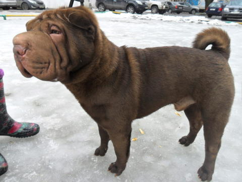

Шар-пей(шарпей)
- Продолжительность жизни: около 10 лет
- Группа: Неспортивная
- Окрас шерсти: Светло сливочный, красно-коричневый, черный и коричневый
- Длина шерсти: короткая.
- Линька: умеренная.
- Рост кобеля: 45-50 см
Шарпей - собака средних размеров, осторожная и внимательная, обладающая чувством собственного достоинства.
У нее форма головы в профиль квадратная, что обуславливается характерной особенностью данной породы.
У собаки крупная голова и по сравнению с телом она кажется немного непропорциональной.
А мордочка по своей форме напоминает морду гиппопотама. У шарпея очень подвижный хвост, высоко посаженный на крупе.
Вообще, хвост, одна из самых характерных особенностей этой породы.
Шарпеи – очень интеллектуальные, независимые, благородные и снобистские собаки.
Они очень благодушны по отношению к незнакомцам и всегда преданны хозяину и семье.
Несмотря на свою нахмуренную и сморщенную мордочку, это очень добрые и спокойные собаки.
Шарпеи отлично подходят для жизни в семье. Они очень хорошо общаются с детьми и с другими животными,
особенно если с юного возраста постоянно находились рядом с ними. Но все же к незнакомцам собаки относятся довольно прохладно.
Предполагают даже, что они враждебны по отношению к чужакам.
По своей природе, шарпеи независимые собаки и всегда стараются занять лидирующие позиции,
поэтому собаке с самого начала нужно показать, кто в вашем тандеме главный.
Если вы будете вести себя неуверенно и сразу не поставите себя должным образом,
то рискуете надолго остаться в подчинении у своего питомца. Шарпей даже может отказаться выполнять команды других членов семьи,
если те не установят в отношениях с ним правило «я – хозяин, и я - главный».
